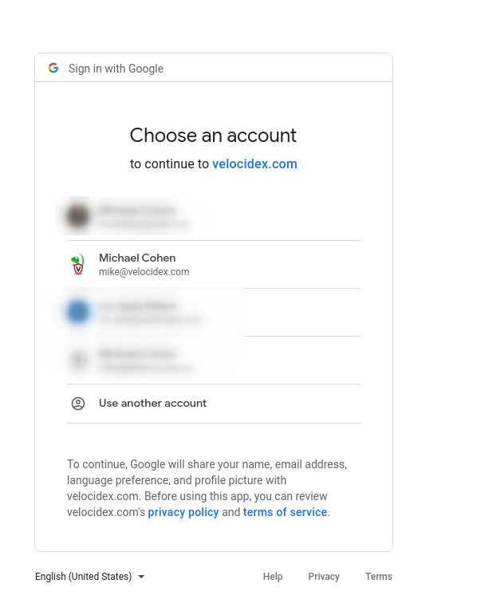
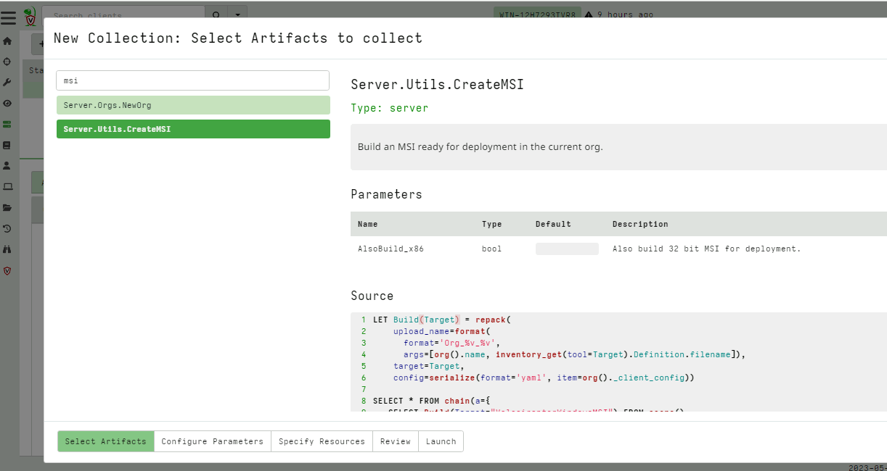
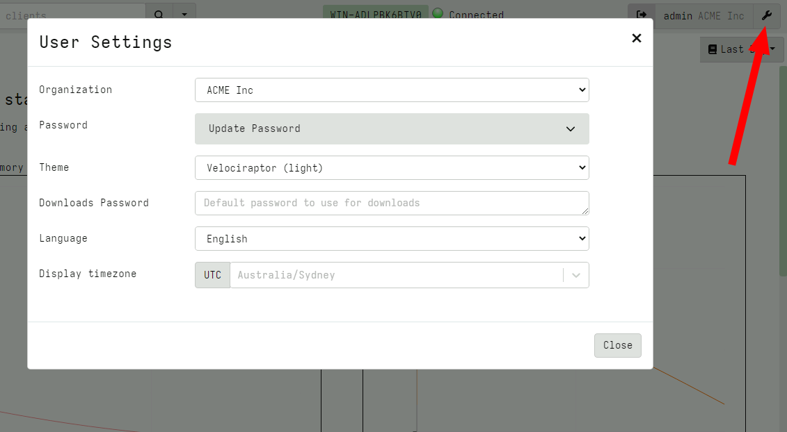

<!-- .slide: class="title" --> <h1 style="font-size: 4ex">Introduction to Velociraptor</h1> <div class="inset"> ## Velociraptor: Digging Deeper Course ### Mike Cohen, Digital Paleontologist ### Rapid 7 Inc </div> --- <!-- .slide: class="content" --> ## Overview Welcome to the Velociraptor: Digging Deeper Course! * This course is designed as a deep dive into Velociraptor, Digital Forensics and Incident Response. You will: * Learn how to apply advanced DFIR techniques to respond to an incident, collect data and post process it to answer critical investigative questions. * Be able to develop specific VQL queries to retrieve novel artifacts from endpoints. --- <!-- .slide: class="content" --> ## Outline * `Deployment`: Deploying Clients and Server in a production environment. * `Velociraptor Query Language (VQL)`: Velociraptor's magic sauce. * `Filesystem Forensics`: Basics of forensic analysis and parsing of filesystems and different files. * `Event Logs`: The investigator's best friend! We cover Windows and Linux logging mechanisms. * `Triage and Acquisition`: Collecting files on the endpoints --- <!-- .slide: class="content" --> ## Outline * `Volatile Artifacts and Memory Analysis`: Deep dive into the type of information volatile state can provide! * `Hunting`: Actively search for evil! * `Event Monitoring`: Velociraptor's real time monitoring capability is built with VQL! * `Server Automation`: Extending VQL and automating tasks with VQL! --- <!-- .slide: class="title" --> # Let's begin our Jurassic Adventure!
<!-- .slide: class="content" --> ## What is Velociraptor? * Velociraptor is a unique Free and Open Source DFIR tool, giving you power and flexibility through the Velociraptor Query Language * VQL is used to drive a powerful set of forensic capabilities: * Using VQL we can write custom "Artifacts" to identify emerging threats quickly and safely * Hunt for artifacts at scale over thousands of end points within minutes! --- <!-- .slide: class="full_screen_diagram" --> ## Deployment overview  --- <!-- .slide: class="content" --> ## Typical deployments * Support Linux, Windows, MacOS, FreeBSD … * Server simply collects the results of queries - clients do all the heavy lifting. * Client memory and CPU usage is controlled via throttling and active cancellations. * Server is optimized for speed and scalability * Concurrency control ensures stability * Bandwidth limits ensure network stability --- <!-- .slide: class="content" --> ## Typical deployments Current recommendations * 10k-15k clients - single server with file based data store (usually cloud VM). * SSL load is the biggest load - TLS offloading helps a lot! * 8 GB RAM/8 cores is generous towards the top of the range. * We recommend Ubuntu/Debian server * 15-20k to 150k endpoints we recommend a multi-frontend setup.
<!-- .slide: class="title" --> # Network Communications ## Understanding client/server communications --- <!-- .slide: class="content small-font" --> ## Network Communications overview * Communication through HTTPS Post * Full duplex communication allows bydirectional data flow. * URLs used are set in the config file `Client.server_urls` list. * Payload is encrypted and signed using the internal Velociraptor PKI * Clients generate their own private/public key set * Client ID is tied to their private key (Hash) * Therefore it is not possible to impersonate a client id without compromising the private key. --- <!-- .slide: class="full_screen_diagram" --> ## Network Communications overview  --- <!-- .slide: class="content small-font" --> ## Velociraptor’s internal PKI * The configuration wizard create an internal CA with an X509 certificate and a private key. This CA is used to 1. Create initial server certificates and any additional certificates for key rotation. 1. CA public certificate is embedded in the client’s configuration and is used to verify server communications. 1. The CA is used to create API keys for programmatic access. The server is then able to verify API clients. * The configuration file contains the CA’s X509 certificate in the **Client.ca_certificate** parameter * It is embedded in the client configuration. * The private key is contained in the **CA.private_key** parameter. --- <!-- .slide: class="content small-font" --> ## TLS verification - Self Signed Mode 1. Self signed mode uses internal CAs for the TLS certificates. The client knows it is in self signed mode if the **Client.use_self_signed_ssl** flag is true. - Server presents a certificate issued by the internal Velociraptor CA - Client verifies cert directly - Client **does not** trust public PKI or on host root store! Only trust included CA certificate. - This pins the server’s certificate inside the client --- <!-- .slide: class="content small-font" --> ## TLS verification - PKI/Lets Encrypt Mode * PKI Mode: Proper certificates minted by Let’s encrypt. * Client uses root CA chains to verify connections (public CAs, Host root store or embedded root certs). * This is suitable for MITM proxies. * Add trusted certs to `Client.Crypto.root_certs` in PEM format --- <!-- .slide: class="content" --> ## Adding Proxy and MITM settings * Some networks require communication via a proxy. * Add proxy to config file at `Client.proxy` * PAC or Windows Auth not supported. * Some networks have an SSL MITM proxy * Add root certs to `Client.Crypto.root_certs` * Note that this only affects the outer TLS layer - the proxy still has no visibility of the communication. --- <!-- .slide: class="content small-font" --> ## Configuration reference * Many settings available in the config file. * The config Wizard produces a reasonable start configuration. * You can customize it to deal with different needs. * Full configuration reference at https://docs.velociraptor.app/docs/deployment/references/ * The knowledge base contains tips for many tasks: * https://docs.velociraptor.app/knowledge_base/ * [How Do I Use My Own SSL Certificates?](https://docs.velociraptor.app/knowledge_base/tips/ssl/) * [How To Fix “Certificate Has Expired Or Not Yet Valid Error”? ](https://docs.velociraptor.app/knowledge_base/tips/rolling_certificates/)
<!-- .slide: class="title" --> # Deploying The Server ## Cloud deployment --- <!-- .slide: class="content" --> ## Run Velociraptor on your machine Download Velociraptor from GitHub (.msi or .exe) ```text "C:\program files\Velociraptor\Velociraptor.exe" gui ``` --- <!-- .slide: class="full_screen_diagram small-font" --> ## Run Velociraptor on your machine The "gui" command creates an instant temporary server/client with self signed SSL and a hard coded admin/password. --- <!-- .slide: class="content" --> ## Self Signed SSL mode * Frontend served using TLS on port 8000 (connected to clients) * GUI uses basic authentication with usernames/passwords. * GUI Served over loopback port 8889 (127.0.0.1) * By default not exposed to the network * You can use SSH tunneling to forward the GUI --- <!-- .slide: class="content" --> ## Steps to deploy Velociraptor 1. Provision a VM in the cloud * Configure DNS (static or dynamic) * Configure OAuth2 SSO 2. Generate configuration files 3. Build debian packages and install 4. Build MSI packages for Windows 5. Deploy via GPO/SCCM etc. * The instructor will demonstrate step 1. See the workshop setup document for credentials. --- <!-- .slide: class="full_screen_diagram" --> ### Setting Dynamic DNS with Google Domains  --- <!-- .slide: class="full_screen_diagram small-font" --> ### Configuring Google OAuth2 Requires a new project and a consent screen **NOTE**: Do not add an application logo or require more permissions - Google will require OAuth verification which can take weeks!  --- <!-- .slide: class="full_screen_diagram small-font" --> ### Generate OAuth client credentials. Note you can have multiple credentials and multiple domains in the same GCP project.  --- <!-- .slide: class="full_screen_diagram small-font" --> ### Generate OAuth client credentials. * The redirect URL is the url which Google will use to call back to Velociraptor with the user’s successful login. Note the client id and secret - we will need to provide it in the server config. It must be `https://<domain>/auth/google/callback` <img src="oauth_redirect_url.png" class="mid-height"> --- <!-- .slide: class="full_screen_diagram small-font" -->  --- <!-- .slide: class="content small-font" --> ## Installing a new server Use the password provided in the Workshop setup to log into the server. 1. Fetch the latest Velociraptor Windows and Linux release binaries 2. Create a new configuration: ``` velociraptor config generate -i ``` 3. Create a new server debian package ``` velociraptor --config server.config.yaml debian server ``` --- <!-- .slide: class="content small-font" --> ## Installing a new server Push the debian package to the server using scp ``` scp velociraptor_server*.deb mike@123.45.67.89:/tmp/ ``` Install package ``` sudo dpkg -i velociraptor_server*.deb ``` --- <!-- .slide: class="full_screen_diagram small-font" --> Generate new configuration with the details in the Workshop setup document.  --- <!-- .slide: class="content optional" data-background-color="antiquewhite" --> ## Automating config generation Some people want to automate the config generation step. Velociraptor supports a JSON merge for non interactive configuration generation ``` velociraptor config generate --merge '{"autocert_domain": "domain.com", "autocert_cert_cache": "/foo/bar"}' ``` --- <!-- .slide: class="content small-font" --> ## Building a server deb package ``` ./velociraptor-v0.7.0-windows.exe --config ~/server.config.yaml debian server --binary velociraptor-v0.7.0-windows.exe ```  --- <!-- .slide: class="content small-font" --> ## Deploying the server * scp the deb file to the target server ``` sudo dpkg -i velociraptor_0.7.0_server.deb ```  --- <!-- .slide: class="content small-font" --> ## Deploying the server When installing the deb package you might need to install dependencies by using `apt-get install -f`  --- <!-- .slide: class="full_screen_diagram small-font" --> ### Deploying the server * The service adds a new velociraptor user to run under. * You can now access the Velociraptor server using your browser.  --- <!-- .slide: class="full_screen_diagram small-font" --> ### Deploying the server The first time you navigate to the SSL URL the server will obtain a certificate from Let's Encrypt. There will be a small pause as this happens.  --- <!-- .slide: class="full_screen_diagram small-font" --> ### Deploying the server You will be redirected to Google for authentication - Velociraptor does not handle any credentials in this configuration. Google will determine if the user authenticated properly (2 FA etc) and convey simple info like the user’s email address and avatar. <div style="text-align: center;">  </div> --- <!-- .slide: class="full_screen_diagram" --> ## Your Velociraptor is ready to use! 
<!-- .slide: class="title" --> # Troubleshooting ### When things do not go to plan! --- <!-- .slide: class="content" --> ## Server fails to start * By default the server is running as a systemd service * Error message is not the most useful: ``` ● velociraptor_server.service - Velociraptor linux amd64 Loaded: loaded (/etc/systemd/system/velociraptor_server.service; enabled; vendor preset: enabled) Active: activating (auto-restart) (Result: exit-code) since Fri 2021-12-31 15:32:58 AEST; 1min 1s ago Process: 3561364 ExecStart=/usr/local/bin/velociraptor --config /etc/velociraptor/server.config.yaml frontend (code=exited, status=1/FAILURE) Main PID: 3561364 (code=exited, status=1/FAILURE) ``` --- <!-- .slide: class="content small-font" --> ## Starting the server manually * You can start the server manually to see any error messages from Velociraptor * Be sure to stop the service first `service velociraptor_server stop` * Make sure to switch to the `velociraptor` user first (otherwise filesystem permissions can be messed up) ```bash wrap # sudo -u velociraptor bash $ velociraptor frontend -v Dec 31 15:47:18 devbox velociraptor[3572509]: velociraptor.bin: error: frontend: loading config file: failed to acquire target io.Writer: failed to create a new file /mnt/data/logs/Velociraptor_debug.log.202112270000: failed to open file /mnt/data/logs/Velociraptor_debug.log.202112270000: open /mnt/data/logs/Velociraptor_debug.log.202112270000: permission denied ``` * Fix with `chown -R velociraptor:velociraptor /path/to/filestore/` --- <!-- .slide: class="content small-font" --> ## Debugging client communications * What could go wrong? 1. No connectivity between client and server 2. Unable to establish secure comms. * To see client logs run the client manually with the `-v` flag. ``` velociraptor.exe --config client.config.yaml client -v ``` --- <!-- .slide: class="full_screen_diagram" --> ## Network Connectivity problems  --- <!-- .slide: class="content small-font" --> ## Network Connectivity problems You can verify network connectivity and TLS configuration by using curl to fetch the server certificate: ``` curl.exe -k https://server:8889/server.pem ``` * For self signed deployments curl needs the `-k` flag to ignore untrusted certificates. --- <!-- .slide: class="content small-font" --> ## Network Connectivity problems * Captive portals may interfere with the communication  --- <!-- .slide: class="content small-font" --> ## Network Connectivity problems * You can view the certificate details by using openssl. * Check for expiry times ```sh curl https://test.velocidex-training.com/server.pem | openssl x509 -text ```
<!-- .slide: class="title" --> # Additional deployment scenarios --- <!-- .slide: class="content optional" data-background-color="antiquewhite" --> ## Using multiple OAuth providers * It is possible to use multiple oauth providers at the same time. * This is very useful when you need to provide access to people outside your org! * The `multi` authenticator allows multiple OIDC providers to be chained in the same server: Just add them separated under the `sub_authenticators` key. --- <!-- .slide: class="content optional" data-background-color="antiquewhite" --> ## The multi Authenticator ```yaml GUI: authenticator: type: multi sub_authenticators: - type: Google oauth_client_id: XYZ.apps.googleusercontent.com oauth_client_secret: XYZSecret default_session_expiry_min: 600 - type: Github oauth_client_id: 1234 oauth_client_secret: 1234secret - type: oidc oidc_issuer: https://dev-1234.okta.com/oauth2/default oidc_name: AcmeInc avatar: https://example.com/acme.png oauth_client_id: XYZ.apps.googleusercontent.com oauth_client_secret: XYZSecret ``` --- <!-- .slide: class="full_screen_diagram small-font" data-background-color="antiquewhite" --> ## MultiAuthenticator log in screen. <div style="text-align: center;"> </div> --- <!-- .slide: class="content optional" data-background-color="antiquewhite" --> ## Client certificate based authentication. * You do not need to use any authentication provider at all! * It is possible to rely solely on client side certificates * The process is similar to getting API certificates: ```sh $ velociraptor config api_client --name Mike --role administrator --password --pkcs12 mike.pkcs12 mike.config.yaml ? Password: ******* Wrote PKCS12 file on mike.pkcs12. Creating API client file on mike.config.yaml. ``` --- <!-- .slide: class="content optional" data-background-color="antiquewhite" --> ## Client certificate based authentication. ```yaml GUI: authenticator: type: certs ``` --- <!-- .slide: class="content optional" data-background-color="antiquewhite" --> ## Import certificate into personal store (Manage User Certificates)  --- <!-- .slide: class="content" --> ## Multi-Frontend deployments * We recommend single server deployment for networks < 20k endpoints. * For larger networks, we recommend multi-frontend deployments. * These require a shared network filesystem (e.g. NFS, EFS). * Network filesystems tend to be very slow * Velociraptor will use many tricks to achieve reasonable performance on network filesystems! --- <!-- .slide: class="full_screen_diagram small-font" --> ### Multi frontend deployment overview <div style="text-align: center;"> <img src="multifrontend_overview.png" class="mid-height"> https://docs.velociraptor.app/docs/deployment/cloud/multifrontend/ </div> --- <!-- .slide: class="full_screen_diagram small-font" --> ## Exercise: Create a Master/Minion deployment * Create a multi-frontend deployment running on the same host VM * This allows the GUI to run on a separate process and allows unloaded post processing/notebook operations. * For our example: * Configure the minion node to listen on port 8005 and the master can remain on port 8000 * Start the master and minion frontends manually to see what is happening: ```sh velociraptor -v --config server.config.yaml frontend --minion --config.frontend-bind-port 8005 velociraptor -v --config server.config.yaml frontend ``` --- <!-- .slide: class="content" --> ## Exercise: Customizing the dashboard * When running multiple deployments or multiple orgs it is convenient to customize the dashboard. * Customize the dash board to add your name to the main page. This helps identify your deployment. --- <!-- .slide: class="content small-font" --> ## Server Lockdown Mode * Velociraptor is an extremely powerful tool. * A Velociraptor Server Admin account takeover can be very dangerous! * But we still want to have it available so we can respond quickly. * `Server Lockdown Mode` prevents Velociraptor from performing any destructive actions while in lockdown! Add the following to the `server.config.yaml` and restart the server ``` lockdown: true ```
<!-- .slide: class="title" --> # Multi-Tenancy and RBAC ## Securing Access --- <!-- .slide: class="content small-font" --> ## Supporting Multiple Orgs Velociraptor supports multiple orgs in a fully multi tenancy configuration. * Clients are divided into `Orgs` * Each `Org` is completely separated: * Files are stored in a different location * Users have different ACLs and rights in different orgs * Custom artifacts can be maintained in different Orgs * Orgs can be created and destroyed easily at runtime * All clients share the same infrastructure * Different orgs' clients can not connect to other orgs --- <!-- .slide: class="content small-font" --> ## Switching to different orgs By default the `Velociraptor gui` command creates two orgs. Switch to the second org sing the GUI's user preferences tab.  --- <!-- .slide: class="content small-font" --> ## Creating a new org You can use the Server.Orgs.NewOrg artifact to create a new org  --- <!-- .slide: class="content small-font" --> ## Users and orgs * A Velociraptor user is any entity that has permissions on the org * Users may be able to log into the GUI or via the API (service accounts) * Users need certain permissions to perform an action * `Roles` are bundles of permissions - just a convenience! Extra permissions can also be given. The default roles: <div class="container small-font"> <div class="col"> * `org_admin` * `administrator` * `reader` * `api` </div> <div class="col"> * `analyst` * `investigator` * `artifact_writer` </div> </div> --- <!-- .slide: class="content small-font" --> ## Adding a new user If using basic authentication you can change the user's password here as well.  --- <!-- .slide: class="content small-font" --> ## Assign user to org By default the initial role assigned is `reader`  --- <!-- .slide: class="content small-font" --> ## Adjust User permissions User roles and permissions are only effective within an org. The same user can have different roles in different orgs. To delete a user, simply remove all their roles from an org.  --- <!-- .slide: class="full_screen_diagram" --> ### Preparing a deployment for the new org * Clients are provisioned for their respective orgs. * You can prepare an MSI for deployment using the `Server.Utils.CreateMSI` artifact.  --- <!-- .slide: class="content small-font" --> ## Fetching the prepared MSI for deployment The prepared MSI contains the relevant embedded config and is ready for installation.  --- <!-- .slide: class="content small-font" --> ## Auditing user action Velociraptor is a very powerful platform and requires strong auditing.  --- <!-- .slide: class="content small-font" --> ## Inspecting the audit timeline It is also possible to forward audit events off system (remote syslog or Open Search server) 
<!-- .slide: class="title" --> # Configuring Clients --- <!-- .slide: class="content" --> ## Deploying clients - Windows * We typically distribute signed MSI packages which include the client’s config file inside them. This makes it easier to deploy as there is only one package to install. * Velociraptor can create the MSI to target the correct Org using the `Server.Utils.CreateMSI` artifact. --- <!-- .slide: class="content optional" data-background-color="antiquewhite" --> ## Domain deployment We can deploy the MSI to the entire domain using group policy. Two Methods: 1. Via scheduled tasks. 2. Via assigned software. --- <!-- .slide: class="content optional" data-background-color="antiquewhite" --> ## Domain deployment: Scheduled Task Create a share to serve the MSI from. <div style="text-align: center;"> <img src="making_share.png" class="mid-height"> </div> --- <!-- .slide: class="content optional" data-background-color="antiquewhite" --> ## Domain deployment: Scheduled Task Ensure everyone has read access from this share - and only administrators have write access! <div style="text-align: center;"> </div> --- <!-- .slide: class="full_screen_diagram small-font" data-background-color="antiquewhite" --> ## Domain deployment: Scheduled Task Use the group policy management tool create a new Group Policy Object in the domain (or OU) <div style="text-align: center;"> <img src="creating_gpo.png" class="mid-height"> </div> --- <!-- .slide: class="full_screen_diagram small-font" data-background-color="antiquewhite" --> ## Domain deployment: Scheduled Task Edit the new GPO <div style="text-align: center;"> <img src="editing_gpo.png" class="mid-height"> </div> --- <!-- .slide: class="full_screen_diagram small-font" data-background-color="antiquewhite" --> ## Domain deployment: Scheduled Task <div style="text-align: center;"> </div> --- <!-- .slide: class="full_screen_diagram small-font" data-background-color="antiquewhite" --> ## Domain deployment: Scheduled Task Ensure the new scheduled task is run as system <div style="text-align: center;"> <img src="editing_gpo_2.png" class="mid-height"> </div> --- <!-- .slide: class="full_screen_diagram small-font" data-background-color="antiquewhite" --> ## Domain deployment: Scheduled Task Using scheduled tasks you can run any binary - use this method to run interactive collection if you do not have a dedicated Velociraptor server <div style="text-align: center;"> <img src="editing_gpo_new_action.png" class="mid-height"> </div> --- <!-- .slide: class="full_screen_diagram small-font" data-background-color="antiquewhite" --> ## Domain deployment: Scheduled Task Ensure the new scheduled task is run only once <div style="text-align: center;"> <img src="editing_gpo_run_once.png" class="mid-height"> </div> --- <!-- .slide: class="full_screen_diagram small-font" data-background-color="antiquewhite" --> ## Domain deployment: Assigned Software Method 2: install via assigned software packages in GPO. The main advantage here is that it is possible to upgrade or uninstall Velociraptor easily <div style="text-align: center;"> <img src="editing_gpo_assigned_software.png" class="mid-height"> </div> --- <!-- .slide: class="full_screen_diagram small-font" data-background-color="antiquewhite" --> ## Domain deployment: Assigned Software You will need to wait until group policy is updated on the endpoint or until the next reboot. The endpoint must be on the AD LAN <div style="text-align: center;"> </div>
<!-- .slide: class="title" --> # A Velociraptor GUI tour <img src="../../modules/gui_tour/tour-bus.png" class="title-inset"> --- <!-- .slide: class="content" --> ## The Dashboard * The Dashboard shows the current state of the installation: * How many clients are connected * Current CPU load and memory footprint on the server. * When running hunts or intensive processing, memory and CPU requirements will increase but not too much. * You can customize the dashboard - it’s also just an artifact. --- <!-- .slide: class="full_screen_diagram" --> ## The Dashboard <div style="text-align: center;"> </div> --- <!-- .slide: class="content" --> ## User Preferences You can customize the interface to your liking <div class="container small-font"> <div class="col"> * Themes </div> <div class="col"> * Languages * Timezones </div> </div>  --- <!-- .slide: class="title" --> # Interactively investigate individual clients --- <!-- .slide: class="content small-font" --> ## Searching for a client To work with a specific client we need to search for it. Press the **Search** or **Show All** button to see some clients. You can also use the **Show recent hosts** to see your own clients. <div style="text-align: center;"> </div> --- <!-- .slide: class="content" --> ## Search for clients ### hostname, label, or client ID. * You can start typing the hostname to auto-complete * Some common terms: * `host`: search by hostnames * `mac`: Mac addresses * `ip`: last seen IP address * `label`: Search by labels * `recent`: Show all clients recently interacted with --- <!-- .slide: class="content small-font" --> ## Client Overview * Internally the client id is considered the most accurate source of endpoint identity <div style="text-align: center;"> </div> --- <!-- .slide: class="content small-font" --> ## Shell commands * Velociraptor allows running shell commands on the endpoint using `Powershell`/`Cmd`/`Bash` * Only Velociraptor users with the administrator role are allowed to do this! * Actions are logged and audited ```powershell Get-LocalGroupMember -Group "Administrators" ``` --- <!-- .slide: class="content" --> ## Running Shell Commands  --- <!-- .slide: class="title" --> # Interactively fetching files from the endpoint <img src="../../modules/gui_tour/fetch.png" class="title-inset"> --- <!-- .slide: class="full_screen_diagram small-font" --> ### The VFS View Remember that the VFS view is simply a server side cache of information we know about the endpoint - it is usually out of date!  --- <!-- .slide: class="content small-font" --> ## Navigating the interface * Click the “Refresh this directory” will schedule a directory listing artifact and wait for the results (usually very quick if the endpoint is online). * The “Recursively refresh this directory” will schedule a recursive refresh - this may take some time! After this operation a lot of the VFS will be pre-populated already. * “Collect from client” will retrieve the file data to the server. After which, the floppy disk sign indicates that we have file data available and you can click the “Download” link to get a copy of the file. --- <!-- .slide: class="content small-font" --> ## The VFS interface Previewing a file after download.  --- <!-- .slide: class="content small-font" --> ## Previewing files The GUI allows close inspection of binary files * Viewing in hex or text * Paging - skipping to offset * Searching using regex or hex strings <img src="../../modules/gui_tour/vfs_view_3.png" class="title-inset"> --- <!-- .slide: class="content" --> ## Velociraptor artifacts Velociraptor is just a VQL engine! * We package VQL queries in Artifacts: * YAML files * Include human description * Package related VQL queries into “Sources” * Take parameters for customization * Can in turn be used in VQL as well... --- <!-- .slide: class="full_screen_diagram small-font" --> ### What does the VFS view do under the cover? * Refreshing the VFS simply schedules new artifacts to be collected - it is just a GUI convenience.  --- <!-- .slide: class="content" --> ## Velociraptor uses expert knowledge to find the evidence A key objective of Velociraptor is encapsulating DFIR knowledge into the platform, so you don’t need to be a DFIR expert. We have high level questions to answer We know where to look for evidence of user / system activities We build artifacts to collect and analyze the evidence in order to answer our investigative questions.
<!-- .slide: class="content" --> ## Review And Summary * In this module we were introduced to Velociraptor! * A highly scalable and easy to deploy DFIR plugin. > So easy to deploy you will think you did it wrong! > Eric Capuano [Live Incident Response with Velociraptor](https://www.youtube.com/watch?v=Q1IoGX--814&t=1651s) --- <!-- .slide: class="content" --> ## Review And Summary * We learned about Velociraptor's Multi-Tenancy feature and how ACLs are managed for Velociraptor's users. * We built MSI packages ready for deployment and used GPO for domain deployment. * Finally we interacted with clients and learned our way around the GUI.